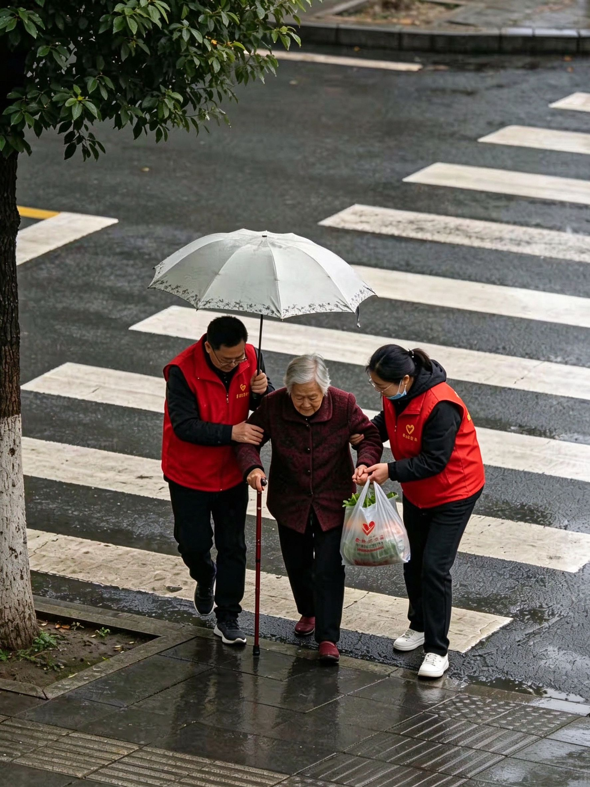
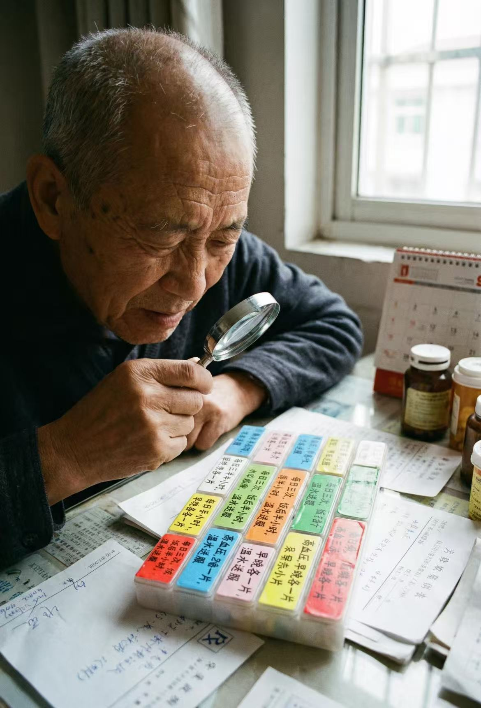
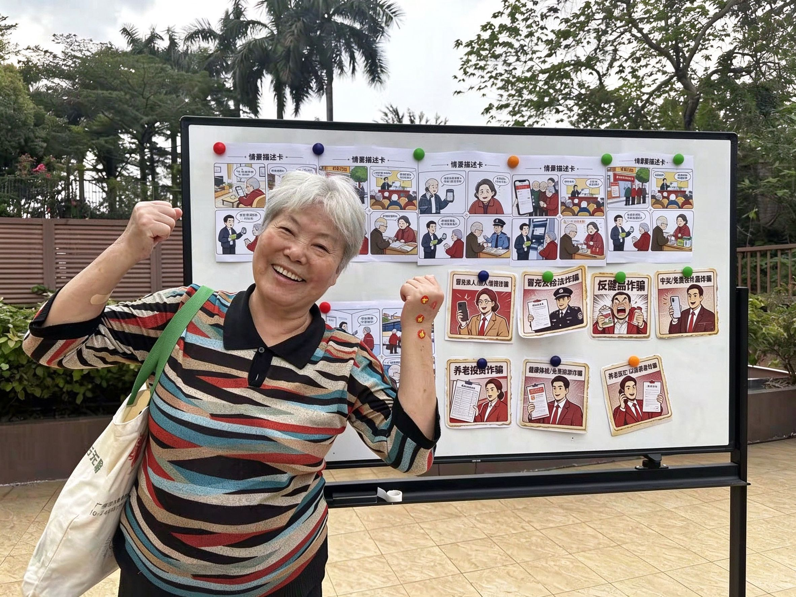

除了个人生活理念外，我们的专属服务式出行还提供多元化的路线规划、票务协助、陪同陪护以及安全守护，确保老人出行平衡多样。我们设计一个让人感觉安心的工具，是一个让你享受出门乐趣和团聚的难忘时刻的地方。同时，我们维护隐私和安宁，确保出行舒适且安全。我们生活在极佳的服务文化中，因为我们相信美好的晚年生活是宝贵的。
我们为您处理各种出行琐事，让您无需担心这些，可以专注于自己喜欢的活动。我们的创新生活设计着眼于未来，提供精致的生活环境，配备丰富的服务和用品。实现您对美好生活的梦想，享受我们时尚工具中的特别幸福之地，这里融合了温馨、安全、关怀与欢聚。
六项核心服务，覆盖老人日常出行、健康管理和安全保障


到点提醒老人吃药，点一下记录已服用，子女端同步收到。再也不怕忘了吃、重复吃。彩色药盒分格清楚，老人一眼就看懂。
老人出门位置子女实时可见，走出安全范围自动告警。异常停留、紧急情况一键求助，让子女随时知道老人平安。我们为每位老人配备专属电子围栏，可设置家、社区医院、菜市场等常去地点，一旦离开安全区域立即推送提醒。同时记录每日出行轨迹，回家后自动生成行程报告，让远程守护更安心。
微信小程序查看老人今日出行轨迹、用药记录、健康状态。不用打电话问，打开就知道。远程守护，亲情不断线。子女端实时同步老人位置、步数、用药完成情况，支持多子女共同关注。异常情况自动推送通知，即使相隔千里也能随时掌握老人动态，让陪伴不再有距离。

陌生电话要求转账、提供验证码？系统自动识别风险，提醒老人先挂电话、联系子女确认。常见骗局一目了然，老人一眼就懂，骗子无从下手。
一键求助，自动把位置发给子女和社区紧急联系人。五秒倒计时取消防误触，关键时刻不手抖。